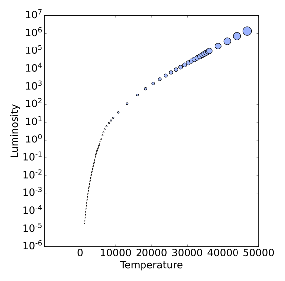
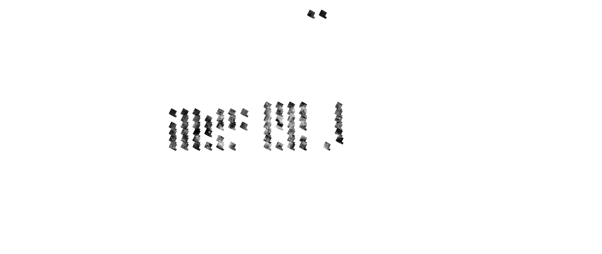
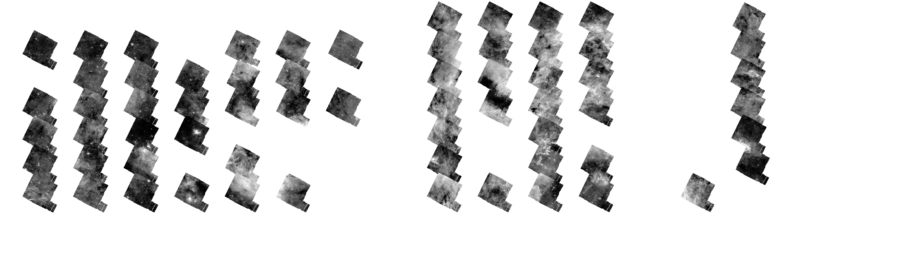
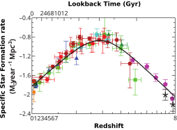

- To move slides, use the arrow keys or swipe on your mobile device
- To see the speaker notes, press "s"
- To go to full screen, press "f"
- To print as PDF, go to this URL: ?print-pdf, then print.
- To get a PDF with speaker notes, add ?print-pdf&showNotes=true to the URL.
Star Formation
and The Galactic Center
- Postdocs: Nazar Budaiev (2026-), Theo Richardson (2025-2026), Miriam Garcia Santa Maria (2024-2025), Allison Towner (2020-2023)
- PhD: Desmond Jeff (2025), Theo Richardson (2025), Alyssa Bulatek (2026), Nazar Budaiev (2026), Savannah Gramze (2027), Taehwa Yoo (2028)
- Undergrad/postbac: Derod Deal, Aden Dawson, Ethan Bhula, Mario Antonio Daley, Prashant Sikhdar, Avery Lacon, Laya Damaraju
- Supported by NSF 2008101, 2206511, CAREER 2142300, STSCI 1905, 2221, 3523, 5365, 6151, 10662, 10678, Roman 19008, 19012, Astropy
Slides available at
https://keflavich.github.io/talks/colloquium_2026_cfa.html or from my webpage →talks
While I'm visiting, ask me about
Star formation drives the evolution of the universe
Star Formation oversimplified
Ṁ
The star formation rate, i.e., how much gas turns to stars
L / M
The light per unit mass, i.e., how stars and stellar populations turn matter into light
High-mass stars produce photons & heavy elements
low-mass stars live practically forever


Point color shows effective temperature, point size shows luminosity (left) and mass (right)
The stellar initial mass function (IMF)
Stars are sampled from this distribution
(but it's not universal)
High-mass stars populate the stellar graveyard

Almost all of the light in star-forming galaxies is produced by high-mass stars
The stars form in and from gas (as traced by dust)
Most of what we know of star formation in detail comes from small local clouds
Most of what we know of star formation in detail comes from small local clouds
Cartoon of isolated low-mass star formation

A molecular cloud fragments


The core forms a central protostar

The protostar heats its parent core and forms a disk

It drives an outflow and consumes its core

Eventually, there is just a star-disk system

Cartoon of isolated low-mass star formation
Almost every planet we know is in that same volume

NASA Exoplanet Archive, Sept 2026 — make_exoplanet_distance_figure.py
...and it defines the star formation relation we extrapolate from

Our Galaxy
Gaia star colors via ESA
Our Galaxy
2MASS via IPAC
Our Galaxy
Planck + HI4PI via lambda.gsfc.nasa.gov
Our Galaxy
HI: "Diffuse" gas
HI4PI
Our Galaxy
Dust
Planck
Our Galaxy
CO: molecular gas
Planck
Our Galaxy
Nearby star-forming regions form few or no massive stars
The Inner Galaxy is where most stars form
The Inner Galaxy is where most stars form

Top-down: 3D dust and young clusters around the Sun
young clusters: <15 Myr
· <60 Myr
dust: Edenhofer+ 2024 · clusters: Hunt & Reffert 2023 (Gaia DR3), Sco-Cen: Ratzenböck+ 2023 · viz: C. Swiggum (live 3D)
The Galactic Center, drawn into that picture to scale

molecular gas
Within 2 kpc of the Sun
MH2 ≈ 1 × 107 M⊙
13 kpc², Σ ≈ 1 M⊙ pc−2
MH2 ≈ 1 × 107 M⊙
13 kpc², Σ ≈ 1 M⊙ pc−2
CMZ (R < 300 pc)
MH2 ≈ 2–6 × 107 M⊙
0.3 kpc², Σ ≈ 70–210 M⊙ pc−2
MH2 ≈ 2–6 × 107 M⊙
0.3 kpc², Σ ≈ 70–210 M⊙ pc−2
More molecular gas than the whole solar neighborhood, in 1/45 of the area.
Edenhofer+ 2024 (top-down) · Battersby+ 2025 (edge-on) · MH2: McKee+ 2015, Henshaw+ 2023
The trouble: our nearest galaxy center is edge-on and obscured
We see the CMZ through 30 magnitudes of extinction, projected along 200 pc of line of sight.
Getting the top-down view is the last third of this talk.
Getting the top-down view is the last third of this talk.
We cannot do this at the Galactic Center yet
The CMZ
$\sim10^8$ M$_\odot$ of gas in $\sim200$ pc, 10% of Galactic star formation
$>\frac{1}{3}$ of CMZ SF is in bound clusters (3-8$\times$ local)

$\sim$50% of CMZ SF occurs in the Sgr B2 cloud.
The Central Molecular Zone of the Galaxy represents one extreme of star forming conditions in the Galaxy


Sgr B2 with JWST/
NIRCam
MIRI
on MEERKAT: Ionized gas shows HII regions (OB stars)

Protoclusters

MIRI reveals deeply embedded feedback sources

MIRI 25 micron shows the outflow:
first IR light from within Sgr B2 N;
first IR light from within Sgr B2 N;
$\dot{M} \sim 10^{-1} \mathrm{~M}_\odot \mathrm{~yr}^{-1}$, $M_{cl} \sim 3\times10^3 \mathrm{M}_\odot$

Sgr B2 N Accretion + Outflow


Massive clusters account for 30-40% of the star formation
A dark, dusty swath hides ongoing unclustered SF
Sgr B2 Deep South — extended star formation with JWST


Sgr B2 Deep South — mostly seen by ALMA




NIRCam starless
F480M (hot dust &/or CO+H2) Brα Paα
F480M (hot dust &/or CO+H2) Brα Paα
ALMA 1.3 mm continuum
contour: ALMA SiO 5–4
contour: ALMA SiO 5–4
Sgr B2 Deep South — Bipolar flow; 5$\mu$m from the cavity?




NIRCam starless
F480M (hot dust &/or CO+H2)Brα Paα
F480M (hot dust &/or CO+H2)Brα Paα
ALMA 1.3 mm continuum
contour: ALMA SiO 5–4
contour: ALMA SiO 5–4
Sgr B2 Deep South — DS9, a hot core containing a massive star, along a thin filament




NIRCam starless
F480M (hot dust &/or CO+H2) Brα Paα
F480M (hot dust &/or CO+H2) Brα Paα
ALMA 1.3 mm continuum
contour: ALMA SiO 5–4
contour: ALMA SiO 5–4
Zooming back out to the overview...
JWST finds the extended, older star formation
ALMA finds the embedded, ongoing star formation


◯ JWST 4.8μm excess sources (Budaiev+ 2026)
■ ALMA 3 mm continuum sources (Ginsburg+ 2018, Budaiev+ 2024, Daley+ in prep)

━ JWST 4.8μm excess source density
There is an overall asymmetry in the star formation seen both in JWST (HII regions) and ALMA (embedded YSOs)
JWST shows the transition is sharp


What ALMA sees, JWST doesn't: 3/700 point source matches
(HII regions, outflow cavities do match)
(HII regions, outflow cavities do match)
- Star formation is ongoing
- JWST & ALMA see different phases - complementary
- Sgr B2 asymmetry is compression/collision

Zooming back out to the Galactic Center as seen by ACES....


JWST has observed much of the Galactic Center

The Galactic Center in the mid-infrared (Spitzer/GLIMPSE)
…and in the radio
…with ACES + MUSTANG on top
Sgr B2: >500 YSOs w/ALMA
~100 HII regions JWST+ALMA+VLA
~100 HII regions JWST+ALMA+VLA
Ginsburg+ 2018, Jeff+ 2024, Budaiev+ 2024, 2025, 2026, Daley+ in prep


Cloud E/F: $10^5\mathrm{~M}_\odot$ gas, 1? YSO
Houghton, Esteve, Gutermuth, Longmore, Huard, Kauffmann subm.


Clouds C & D: $10^5\mathrm{~M}_\odot$ gas, one small “cluster” of 5–10 YSOs each
Gramze+ in prep


The Brick: $10^5\mathrm{~M}_\odot$ gas, about 10 YSOs, one above 5 M$_\odot$
Walker+ 2021


Quintuplet & Arches: no gas, few-Myr old, >10$^4$ M$_\odot$ clusters
Hosek+ 2019


Sgr C: $10^4\mathrm{~M}_\odot$ gas, ~5 IR–ALMA matched YSOs,
~40 inferred from outflows
~40 inferred from outflows
Crowe+ 2023, Lu+ 2021


Star formation in the CMZ does not follow the local relation

What is different about the CMZ?
JWST has observed the CMZ dust ridge

JWST's colors show ice

JWST's colors show ice

The Dust ridge: Cloud A (brick), C, D
All have different ice-to-dust ratios


D
C
A
Gramze+ (subm 2026)
Cloud D

Ice is everywhere
But it's different between clouds
3 kpc filament
Brick Head

Gramze+ (subm 2026)

Gramze+ (subm 2026)
Slope changes imply chemical differences between clouds within the CMZ
CO/Water ratio?
OCN− / Ammonium salt abundance?
TBD: Ashby+ NIRSPEC 6927


Gramze+ (subm 2026)
We know stars are forming in the CMZ, but we've measured only a small portion
The JWST Galactic Center Treasury Survey (GO 10678) — NIRCam: running now
- Stellar populations: star formation history
- Extinction maps: where is the gas?
- YSO candidates

■ observed (12) ■ scheduled (62) ■ delayed (1) ■ awaiting a date (64) status 2026-09-12
…and the same survey with MIRI
- YSO candidates
- PAH feedback maps

■ observed (12) ■ scheduled (62) ■ delayed (1) ■ awaiting a date (64) status 2026-09-12
Progress:
- 38 of 139 pointings observed
- F212N + F480M, opened at $\ell = +0.7$
- a second block has opened at Sgr C


□ observed — NIRCam F212N/F480M mosaic of 2026-09-15, still growing
…and the MIRI parallel, ~6′ to the east
- F770W: PAH emission, warm dust



□ observed — MIRI F770W mosaic of 2026-09-15, still growing
Roman covers the CMZ & more
- Astrometry!
- Variability!
- $\rightarrow$ 3D tomography


□ Roman GC hourly-cadence □ Roman GBTDS PA 90.6° (spring window)
We have had access to position-velocity for a long time, but we still argue about position
Dani Lipman, Robin Tress, Mattia Sormani, et al — inner-Galaxy simulation, gas color-tagged by its true 3D position: face-on (top left), as we see it on the sky (bottom left), and in l–v (right)
Cloud Tomography with Stellar Proper Motions
Stellar orbital motion is measurable w/JWST + Roman
Clouds block and redden stars behind and within
The measurable stellar density with Roman is enough to achieve ~10 pc resolution
Interactive version; orbits after Nieuwmunster+ 2024; method after Vasini+ 2026
Cloud location inversion: ~10 pc resolution along the line of sight

~104 stars → ~10 pc accuracy.
Observed density ~500 stars pc−2 at mK<19 gives ~10–20 pc
Observed density ~500 stars pc−2 at mK<19 gives ~10–20 pc
The GC is the laboratory where cosmologically common conditions are observed at planetary-system forming scales.
The cometary hypothesis: the molecules for life are built in the cloud

Complex organics form on icy grains in cold molecular clouds
…and survive the collapse into the protoplanetary disk
…where they are locked into comets and asteroids
…which deliver them, already made, to a young planet
Figure: V. M. Rivilla
…but the first link is not the same in every cloud
Ice is everywhere in the CMZ — but its composition is not the same from cloud to cloud.
Different CO/H2O, different OCN−: a different mix of simple precursors goes into the disk.
If the CMZ is our local stand-in for cosmic-noon conditions, then the inventory delivered to planets there is not the Solar-neighborhood one.
Gramze+ (subm 2026)
Figure: V. M. Rivilla
Why Roman: proper motions give us the third dimension

We see the CMZ in projection.
Orbital models disagree about what is in front of what — and the gas kinematics alone cannot settle it.
Orbital models disagree about what is in front of what — and the gas kinematics alone cannot settle it.
Roman GO 19008 (Ginsburg+) — CMZ FUZ
Extinction rises with distance — except where clouds intervene

- AV to each star is a running total along the line of sight
- A cloud imprints a step in AV at its distance
- Map enough stars and you can invert AV → d
Roman GO 19008 (Ginsburg+) — CMZ FUZ
Feasible in the first two seasons, with archival first epochs
- Roman – HST (Paα): ~0.1 mas/yr, Δt ~ 19 yr
- Roman – GALACTICNUCLEUS: ~0.3 mas/yr, Δt ~ 5–12 yr
- Roman – VVV: ~0.5 mas/yr, Δt ~ 17 yr
- Roman – JWST (GO 10678): ~0.5–1 mas/yr, Δt ~ 2–5 yr
- Archival epochs give coarse (~50 pc) tomography immediately; Roman-internal PMs reach the ~10 pc goal by season two

Roman GO 19008 (Ginsburg+) — CMZ FUZ
The method exists, and it works on mock data


The nuclear stellar disk rotates: near side toward positive longitude, far side toward negative — a
~5 mas/yr difference against ~1 mas/yr scatter. A proper motion therefore places a star on the near or
the far side, and its extinction measures the dust in front of it.
Proper motions + extinctions → a non-parametric 3D dust map, with no orbital model assumed.
~100 stars per 10×10 pc beam → 20 pc resolution; ≳1000 → 4–8 pc.
GALACTICNUCLEUS+HST already gives ~25 stars pc−2, VIRAC2 ~50, JWST GO 10678 ~150 after one epoch and ~1500 after two.
Vasini, Sormani, Sanders, Ginsburg, Battersby+ 2026 (arXiv:2609.10782)
A hundred stars, a hundred orbits — how proper motions locate a cloud
Interactive version: assets/cmz/cmz_orbit_stars.html — model after Nieuwmunster+ 2024; method after Vasini+ 2026
PLACEHOLDER — NOT PART OF THE TALK
With JWST, ALMA and the VLA we can now resolve individual forming stars, their outflows and
even their ice chemistry across the Milky Way’s Central Molecular Zone — and the
clouds there turn out not to be alike.
That census still covers only a small fraction of the CMZ; the JWST Treasury survey and Roman
will finish it and, for the first time, place these clouds in three dimensions.
What the audience will actually hear, read off the slide order — see the comment above for where this differs from the intended narrative.
- To move slides, use the arrow keys or swipe on your mobile device
- To see the speaker notes, press "s"
- To go to full screen, press "f"
- To print as PDF, go to this URL: ?print-pdf, then print.
- To get a PDF with speaker notes, add ?print-pdf&showNotes=true to the URL.
Star formation theory is calibrated on a small, nearby, unrepresentative sample
- Everything we have resolved is within ~1 kpc. So is almost every planet we know.
- That volume has ~15-20 high-mass star-forming regions and no young massive clusters — yet clusters like that were a major mode of star formation in the early Universe.
- ALMA and JWST have just made disk-scale imaging and YSO demographics possible everywhere else in the Galaxy.
- The Galactic Center is the best stress test we have — and it is already showing stress.
The solar neighborhood is the only place we have resolved star formation
...and the only place we follow the whole life cycle of a young star
Open questions, even here
- When does star formation start in a cloud, and how long does it take?
When does star formation start, and how long does it take?


Same cloud, same stars, same age — the millimeter population looks completely
different depending on when star formation started and how long it lasts.
Richardson & Ginsburg, in prep.
That volume holds only ~15-20 high-mass star-forming regions
ALS II · Gaia DR3 OBA · Quintana+ 2025 · RMS HII/MYSO · our UC HII + embedded-MYSO census · live 3D
There are no young massive clusters in the solar neighborhood


...yet the fraction of star formation that ends up in bound clusters rises from
~2% here and now to ~20% at z > 2 — when most stars formed.
NGC 3603 (HST) · Pfeffer+ 2018 (E-MOSAICS), Fig. 5
...and we know where those clusters came from
The same argument, starting from data everyone has seen: the Dame CO survey
Dame, Hartmann & Thaddeus 2001 · Edenhofer+ 2024 (dust) · make_co3d_data.py
The local dust, in three dimensions
C. Zucker,
from Edenhofer+ 2024
Disk-scale imaging and YSO demographics have just become possible elsewhere


the local benchmark: every disk, in Orion
the same measurement at 2–8 kpc
Both halves of the local recipe — resolved disks, and complete YSO counts — are finally exportable.
Otter+ 2021 (ONC/OMC-1) · ALMA-IMF (Motte+ 2022; Ginsburg+ 2022)
The Galactic Center is the best stress test we have — and it is already showing stress
- Densities, pressures, turbulence and radiation fields of a cosmic-noon disk, at 8 kpc
- Star formation suppressed until far higher densities than local models predict
- Chemistry, ices and dust that do not look like the solar neighborhood
- ...and the richest regions may preferentially make high-mass stars
The rest of this talk is what ALMA and JWST have found there.
The Galactic Center is where we study cosmologically relevant conditions at planet-forming scales
- Part 1: We see star formation in the CMZ, but it's different.
- Part 2: CMZ clouds are icier and dustier
- Part 3: Future: JWST-GC, Roman, tomography



?
What happens to
proto-stellar disks
in these extreme
environments?
proto-stellar disks
in these extreme
environments?

Proplyds: disks photoevaporated

Accretion-driven truncation
Wijnen+ 2017; Otter+ 2021
Wijnen+ 2017; Otter+ 2021
Madau & Dickinson 2014